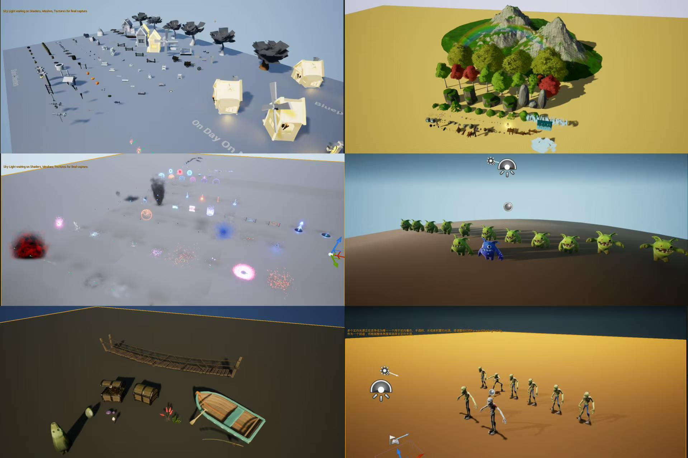

场景资产呈现
展示场景资产、地表植被、岩石与环境氛围的搭建效果，体现地编与建模资产落地能力。
Dungeon Flow / Level Demo
用于展示关卡灰盒、战斗入口、遭遇区、补给点、Boss 场与动线规划。后续可直接替换为 mp4、jpg、png 等素材，HR 打开网页即可浏览。
展示场景资产、地表植被、岩石与环境氛围的搭建效果，体现地编与建模资产落地能力。

展示关卡 DEMO 中的建筑、自然地形、怪物、特效、桥梁、船只与道具资产，用于说明可复用资产库与场景搭建基础。